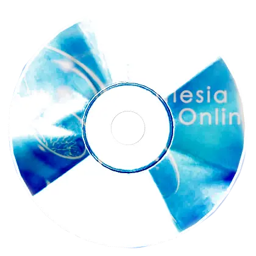
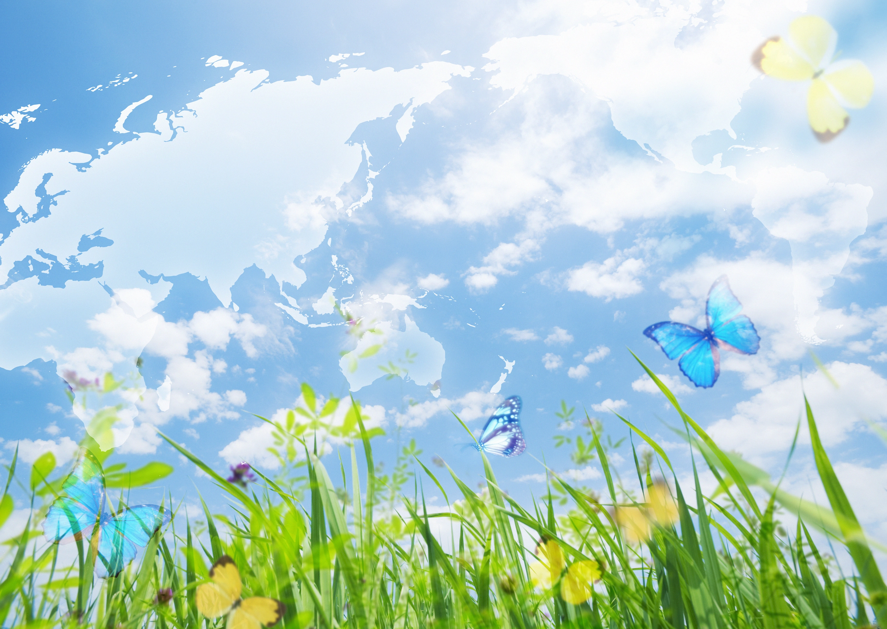
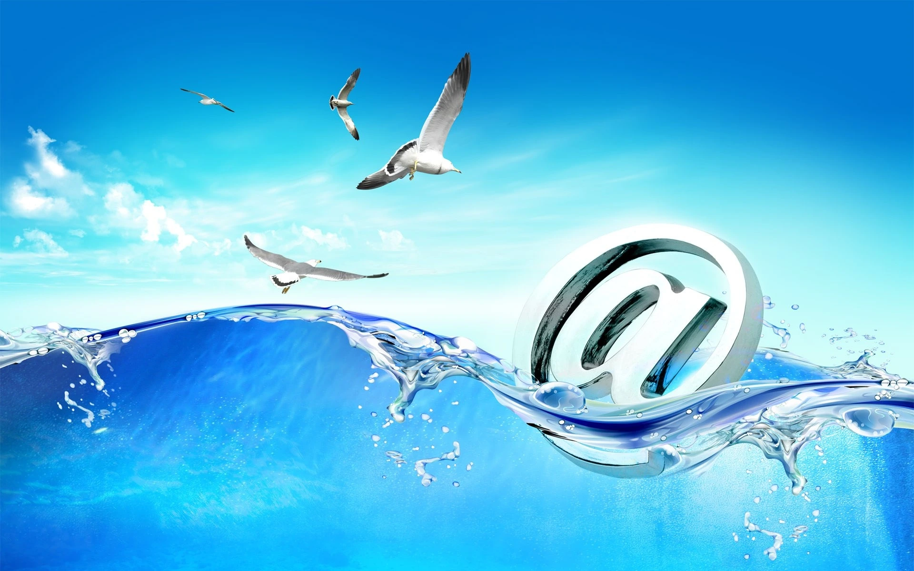
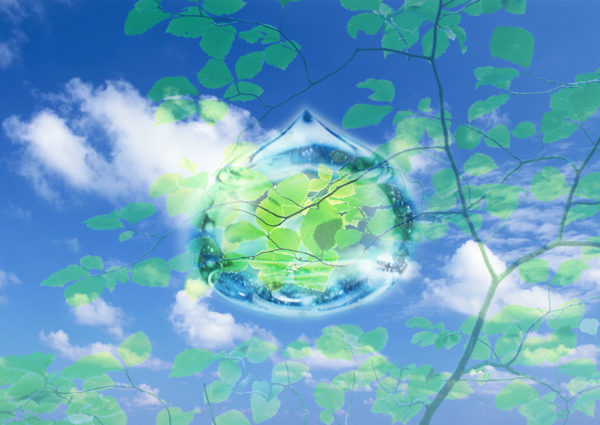

Frutiger Aero is a design aesthetic popular during the mid 2000s to early 2010s. It became famous through operating systems, advertisements, websites, and technology branding. The style is known for glossy surfaces, transparent glass effects, soft gradients, blue skies, bubbles, water, nature imagery, and futuristic optimism. It often mixes technology with clean environmental themes to create a calm and futuristic atmosphere.
The Frutiger Aero style emerged during the rise of modern consumer technology, especially after the skeuomorphic era became popular in digital design. Companies used it to make technology feel friendly, advanced, and clean. Windows Vista, Windows 7, early Apple advertisements, and many electronics commercials used this visual style heavily.
The purpose of Frutiger Aero was to represent a positive vision of the future. Designers combined nature elements like fish, leaves, water, clouds, and sunlight with glossy user interfaces to create a feeling of harmony between humans and technology.
Today, the aesthetic is remembered nostalgically because it represents an optimistic digital future from the 2000s era.


